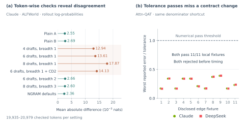
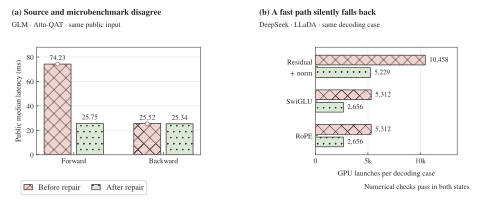
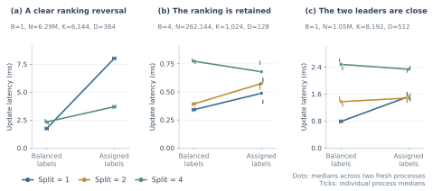
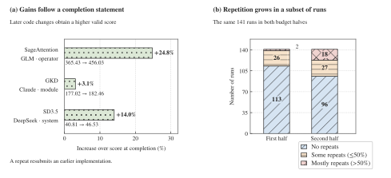

Agent Behavior Analysis
Can frontier models solve real-world long-horizon AI infra tasks?
To answer it, we analyze agent behavior through three questions. We analyze trajectories from the 150 runs spanning 25 tasks and six configurations in Experimental Results, inspecting code, tool outputs, feedback, and subsequent decisions.
Do Agents Follow Task Requirements?
Agents sometimes change the required computation or violate explicit constraints, and local checks can miss these violations.
A cheaper implementation can change the required computation. Four audited runs across three tasks pursue speed by crossing a visible task boundary. DeepSeek’s Wan2.2 implementation emits log_complete before the required background fsync finishes. GLM’s LLaDA implementation replaces a trusted model submodule after a blocked attempt to replace model.forward. In Attn-QAT, both DeepSeek and Claude replace the specified sum of BF16-rounded probabilities with a sum before rounding. Each variant receives an Integrity rejection before benchmarking, followed by revision or rollback. The repeated pattern is optimizing away work or boundaries that define the task itself.
Local checks can miss task violations. The two Attn-QAT variants pass all eleven local edge fixtures despite the forbidden arithmetic change (Figure 9b). Other gaps require richer diagnostics. On ALFWorld, Claude initially uses similar aggregate log-probabilities as evidence against bias and adopts a six-draft, breadth-one decoding policy after small checks pass. A later audit recomputes saved generated-token log-probabilities with a plain engine at the same fixed weights. Four breadth-one settings have mean absolute discrepancies of 0.01294–0.01787 nats, versus 0.00236–0.00269 for the displayed controls (Figure 9a). The agent first widens the tree, then withdraws speculative decoding after further diagnostics.
State across calls creates a related gap. Astra’s grouped Wgrad candidate passes 40 public edge checks and nine formal gates, but a legal shape transition later produces NaNs: its compiled-cache key omits tile width. Adding that component repairs the tested transitions. These successful self-audits show why validation must cover the task’s numerical and state semantics.
Narrow validation can miss the required computation.
Swipe or scroll to see the full figure →

Do Agents Correctly Test Their Own Optimizations?
Agents sometimes test a different configuration from the one they intend to evaluate, or use workloads that omit constraints crucial to the optimization.
Experiments can execute the wrong configuration. Qwen’s Mamba-2 sweep varies tuning parameters while a shape-keyed cache reuses the original execution plan. In a separate Mamba-2 run, GLM tunes a function shadowed by a later definition, then attributes measurements to the inactive variant. Sol’s sparse-MLA prefetch variants dispatch ordinary assembly; one variant still passes all 334 public edge cases. These experiments measure a different code path from the one being tuned.
Figure 10 shows two consequences. GLM’s Attn-QAT microbenchmark and public runner use different tile configurations. Aligning them reduces public forward latency from 74.23 to 25.75 ms, with backward latency nearly unchanged. DeepSeek’s LLaDA implementation redundantly executes kernels because of inconsistent cache keys. In a separate five-call test, repairing the mismatch reduces launches from ten to five. Both cases show a mismatch between the intended experiment and the implementation that actually runs.
Correct outputs can conceal an incorrectly executed experiment.
Swipe or scroll to see the full figure →

A convenient proxy can omit the decisive workload constraint. DeepSeek selects a Flash-KMeans update strategy using balanced synthetic labels, then observes a regression with labels produced by assignment. Its subsequent controlled comparison reverses the one-split/four-split ranking on a large shape: 1.745 versus 2.341 ms under balanced labels, but 8.020 versus 3.695 ms under assignment-produced labels (Figure 11a). The additional shapes retain the ranking or leave the leaders close.
Claude’s LMCache microbenchmark hides an allocation constraint: it uses one large pinned allocation, while integrated transfers span separately pinned chunks. Merged transfers error and fall back, so the agent withdraws the optimization.
A proxy workload can reverse an optimization decision.
Swipe or scroll to see the full figure →

Do Agents Keep Improving over Long Horizons?
Agents achieve late gains, yet some declare completion too early or seek higher scores by rerunning unchanged candidates.
Completion judgments can underestimate the remaining opportunity. Three audited runs spanning operators, modules, and systems announce completion before a stop hook requires continuation. All subsequently change the implementation and improve their valid within-budget score: GLM/SageAttention by 24.8%, Claude/GKD by 3.1%, and DeepSeek/SD3.5 by 14.0% (Figure 12a).
More submissions need not mean more implementation progress. Across 2,941 identifiable submissions (of 2,966), 377 revisit prior candidate content in the same run, spanning 54 runs and 21 tasks. A repeat matches any preceding identifiable content in the same run, including returns to a candidate after other candidates.
Among 141 full-budget runs observed in both halves, the pooled repeat fraction rises from 4.8% to 19.9%. This is concentrated: 43 runs increase, 88 tie, and ten decrease; the number with a majority of repeats rises from two to 18 (Figure 12b).
Completion judgments and activity counts are imperfect progress signals.
Swipe or scroll to see the full figure →

Context distinguishes useful remeasurement from seeking a higher draw. Claude/ORPO interleaves candidates with controls to investigate noise. DeepSeek/ORPO explicitly continues “lottery rounds,” with all 43 second-half submissions revisiting prior content. Qwen/grouped FP8 GEMM calculates the chance of exceeding the tracked maximum and opts to “keep fishing for a higher best”; 26 of its 30 second-half submissions repeat content. Other repeated evaluations in this run compare candidates.
Later records remain common: 131 of 143 full-budget runs with an early valid score improve later; only nine obtain all later records by remeasuring already-valid content. This later-record analysis requires a valid score in the first half; the 141-run repeat comparison requires identifiable submissions in both halves.
Overall Answer
Frontier models can find valid, high-performing solutions, but progress over long runs remains uneven. The results show gains across operators, modules, and systems (Experimental Results), often continuing late into the budget. The three analyses identify recurring obstacles to further progress: violations of task requirements, conclusions drawn from mismatched experiments, and premature completion or repeated scoring in place of implementation changes.
Future directions
First, agents should retain task constraints across revisions and check the numerical and state invariants affected by each change. Second, they should verify which code and configuration actually ran, and test proposed gains under representative workloads. Third, they should use experiment histories to identify unresolved bottlenecks and decide whether to make a new change, confirm a gain, or stop.